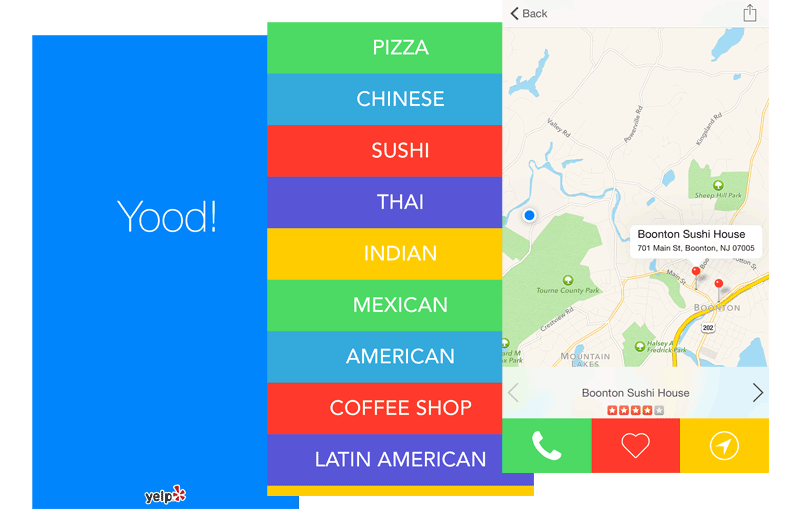

Heroku App Takes the Search Out of Searching for Nearby Restaurants with a One-Click Finder
YOOD! connects people with the highest-rated restaurants nearby per their cuisine of choice.
Hangry — we’ve all been there. You’re so hungry that you can’t even think straight, tempers flare, and you end up eating something that you later regret. As you zoom through your busy life at home or away, you find yourself stumped at mealtimes. Where to eat? And what? There’s no time to thumb through pages of restaurant listings and try to triangulate your way to the right one for the moment. You just want simplicity served up on a platter, with information that is easy to digest.
Singer Kevin Jonas of The Jonas Brothers had experienced this frustration one too many times on the road. He and his CTO Joe Hughes understood that sometimes too much information can be paralyzing, and they wanted create an app that pared restaurant search down to its bare essentials. The idea for YOOD! was born — a location-based app that could deliver the best food choices, one at a time, in an interface that was fun, engaging, and ‘stupid simple.’
YOOD! Serves the Hungry on Heroku
Kevin and Joe were referred to Heroku by a fellow app developer who thought it would work well for their needs. They’d had prior experience with AWS but not with the platform-as-a-service model. On the day they launched the app, their decision to go with Heroku proved to be correct. They went live with one dyno and no idea how much traffic they might get — and it was a tsunami. The social media push produced a massive rush to download the app on launch day, with YOOD! trending in the top 10 of iOS food and drink apps.
Heroku allowed us to scale instantly to meet the massive influx of traffic we experienced on launch day.
Joe Hughes, CTO, YOOD!
The development team had also realized a simple but critical error in their code that impacted their ability to scale. Working with Heroku customer support, they were able to go in and fix the error quickly, then easily provision more dynos to meet demand. The team learned a lot from that experience and were better prepared for the next flood of users that downloaded the app during March Madness. Again they reached out to Heroku customer support to ensure they were able to handle the traffic. They had a record number of downloads that day and made it to the top trending spot in the App Store.
I’m really impressed with the Heroku platform, and even more impressed with the Heroku Customer Support team. They really went the extra mile. Heroku worked really well with my CTO, Joe Hughes, to make sure we were ready to scale.
Kevin Jonas, Founder & CEO, YOOD!
YOOD!’s development team built their app using Node.js and Express.js. They use add-ons Redis-to-Go to manage their Redis instance and Logentries for log management. The Yelp API allows them to leverage Yelp data to provide restaurant details within the YOOD! app.
During the launch rush, the team had provisioned the maximum number of dynos for their account. However, after traffic evened out, they needed to optimize. They reached out to Heroku customer support who helped the team develop a solution that works on clustering and threading Node.js in a more efficient manner, so they could better distribute the load throughout the allocated dynos. Heroku also helped them reduce their provisioning to a level that would maintain the same amount of throughput with fewer dynos, thus dramatically saving costs.
We have to thank Heroku for providing us with the infrastructure and support we needed to be able to handle our own success.
Kevin Jonas, Founder & CEO, YOOD!
App Experience
The YOOD! user experience is extremely simple. A hungry user is presented with a list of cuisine categories, and once selected, the app will source the most popular restaurants within that category that are closest to their location and are open at that time. Restaurants are presented one by one with a map view of the address and location, their phone number, and Yelp rating. That’s it. The user can click to call or scroll to the next restaurant option. If the user is not inspired by the default cuisine categories, they can add their own. Users can save restaurants to their list of favorites or share with friends.

YOOD! 2.0 provides more information on restaurants in the user’s area. In partnership with Delivery.com, the service now allows users to order food for delivery from within the app. The YOOD! experience is also available for the Apple Watch.
With YOOD!, a full belly is only a tap away.
More Stories


Have a question? Give our sales team a call: +1 (866) 278-1349.